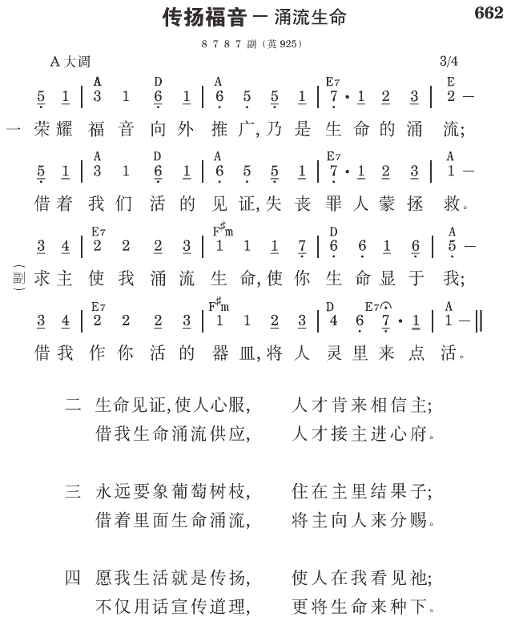

徒5:42 他们每日在殿里，并且挨家挨户，不住地施教，传耶稣是基督为福音。
在使徒的时代，召会是建造在圣徒的家里
就着神的圣言来看，神的召会首先乃是一个家，就是神的家（提前三15）；其次才是祂的国，神的国（罗十四17）。没有家的单位，人很难生存；没有家的基础，国也很难建立。
基督教中了撒但的诡计，以致把家完全抹煞；他们只有大聚会，没有家聚会。在他们中间，人没有可寄托的地方。以罗马十六章为例，毫无疑问，在使徒时代，召会乃是建造在众圣徒的家里。这卷书末了，用了一章的篇幅，专题保罗问安的事。从保罗的问安，我们看见好几个圣徒的家，都是向召会打开的。这在在都给我们看见，当日的召会生活，家的风味非常浓厚。
因这缘故，我们必须竭尽主所给我们的能力、体力、时间，来恢复这个家的风味。头一件事必须作的，就是把圣徒的家都作成聚会的家（《新路实行的异象与具体步骤》二六七至二六八页）。
福音的出口是人，福音的出路是家
我们这个人就是福音的出口，而福音的出路乃是家，我们的家就是福音的出路。若是你的家不给主用，你只是个人传福音，那是有口无路。使徒行传给我们看见，在彼得的时候，门徒们不仅“挨家挨户”擘饼（二46），并且“挨家挨户”传耶稣是基督为福音（五42）。这个“传”在希腊原文，是福音的动词形态，意思是把耶稣是基督当作福音来传。挨家挨户把耶稣是基督当作福音来传。
需要打开家来传福音
路加五章说到一个很好的榜样。利未听见主的呼召，就撇下一切，起来跟从主，而得救了。利未一得救，立刻在自己家里，为主耶稣大摆筵席。他所请的乃是许多税吏和罪人（27~29）。因他自己是个大罪人，也没什么好人作朋友，就是一群狐朋狗友，都请来与主一同坐席。主是主客，陪客的都是罪人。这是好榜样，把家打开传福音。一把家打开，福音就有出路。
祝福不只临到我们，也会临到一代又一代
因此，我盼望你们众人都把家打开，为耶稣大摆筵席，专请“罪人”作客，传福音给他们。你们把家打开，绝对不吃亏，反会蒙福。主自己说，“爱我…的，我必向他们施慈爱，直到千代。”（出二十6）所以为永远计，我们都要打开家，让主的福音有出路。这样，祝福不只临到我们，也会临到一代又一代 （《速兴起传福音》七六至七七、七九至八〇页）。
参读：《新路实行的异象与具体步骤》第十二篇；《速兴起传福音》第四篇。
